Видео на похожие темы
Лето мотоциклистов

1976 p. Страна: СССР


На 18-летие родители подарили Марису мотоцикл. Вместе с другом они носятся по шоссе и, обогнав свадебную машину, знакомятся с женихом и невестой.
Инесе выходит замуж без любви и с радостью соглашается на предложение нового знакомого. Они бегут вместе уезжают на мотоцикле.
У фильме обнаружено: Ява, Иж Пс.
Взрослые дети

1961 p. Страна: СССР
 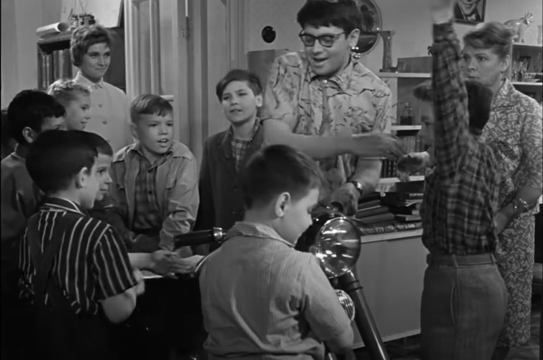
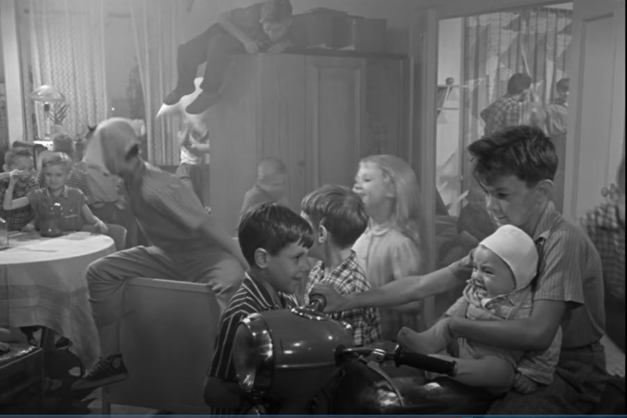
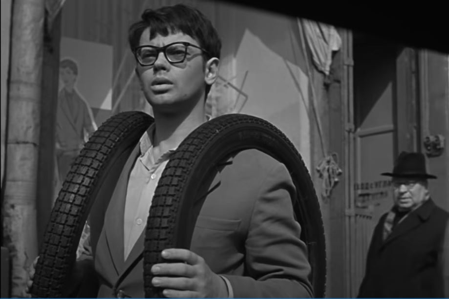
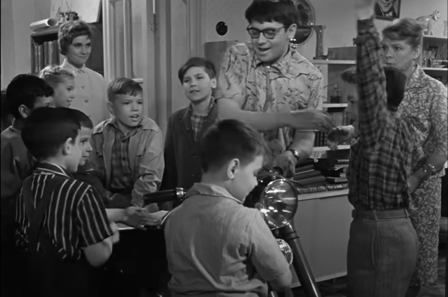
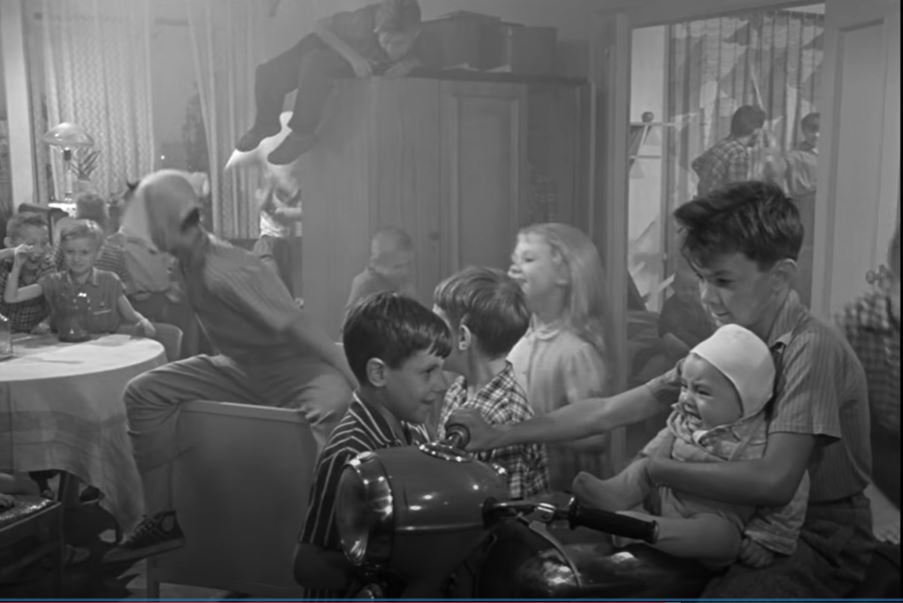
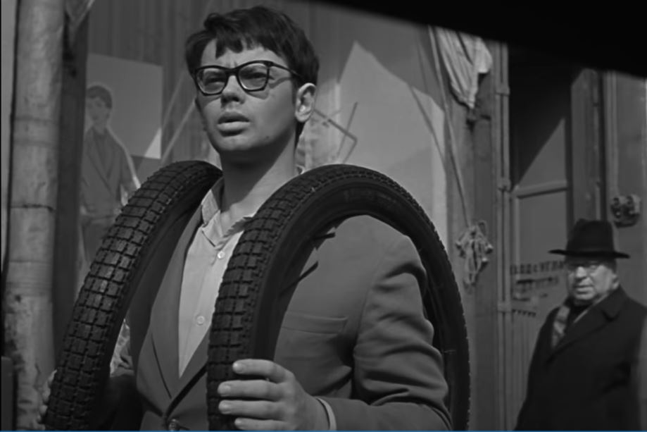
Анатолий Кузьмич Королёв (Алексей Грибов) уходит на пенсию. Он с женой, Татьяной Ивановной (Зоя Фёдорова), планируют, что теперь станут делать, чем заниматься.
Их дочь Людмила (Лилиана Алёшникова) без предупреждения приводит в дом мужа Игоря (Александр Демьяненко).
На вопрос, как они собираются жить, молодые отвечают, что снимут комнату на окраине Москвы, но потом соглашаются жить в комнате у родителей Люды.
У фильме обнаружено: Ява, главный герой Игорь - мотоциклист.
Покровские ворота

1982 p. Страна: СССР


«Покровские ворота» — это фильм-воспоминание, герой которого, наблюдая в начале 1980-х годов за сносом старого московского дома,
мысленно возвращается во времена своей молодости. Основное действие картины происходит в 1956—1957 годах. Аспирант-историк Костик Ромин (Олег Меньшиков),
приехавший в столицу для учёбы в университете, поселяется в квартире своей тётушки Алисы Витальевны (Софья Пилявская).
Жизнь обитателей коммунального «скворечника» заполнена курьёзными, романтическими и драматическими событиями.
У фильме обнаружено: Иж Планета-2,Панония, кросовый Чезет.
В начале фильма Иж Планета-2, потом его сменила Панония с коляской а в конце фильма кросовый Чезет
Закрытие сезона

1974 p. Страна: СССР
 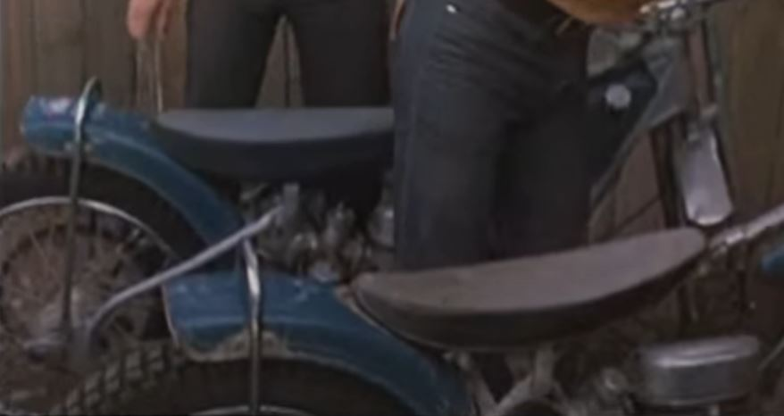
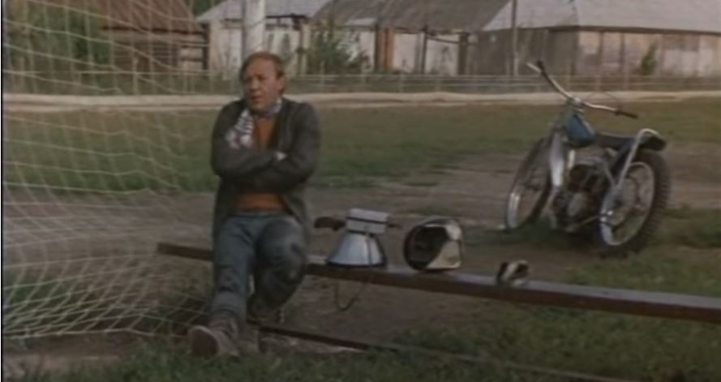
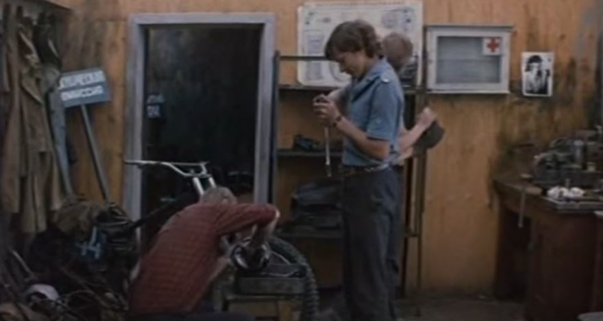
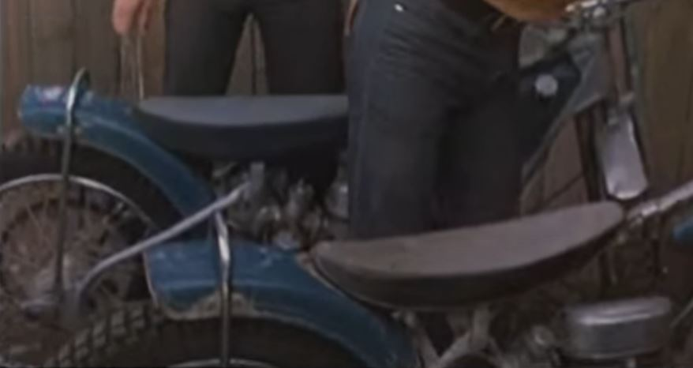
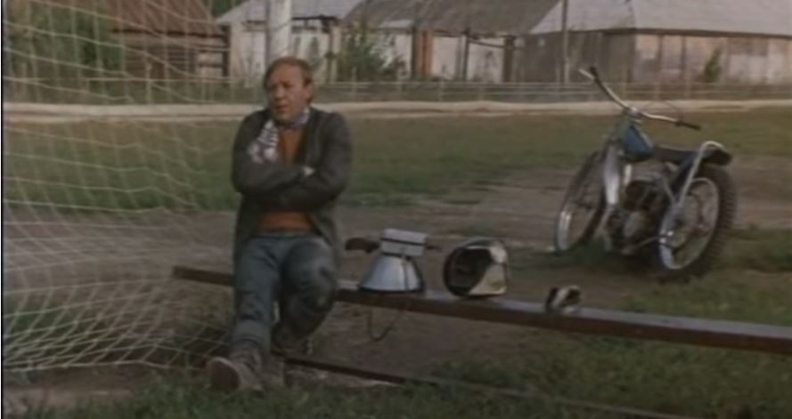
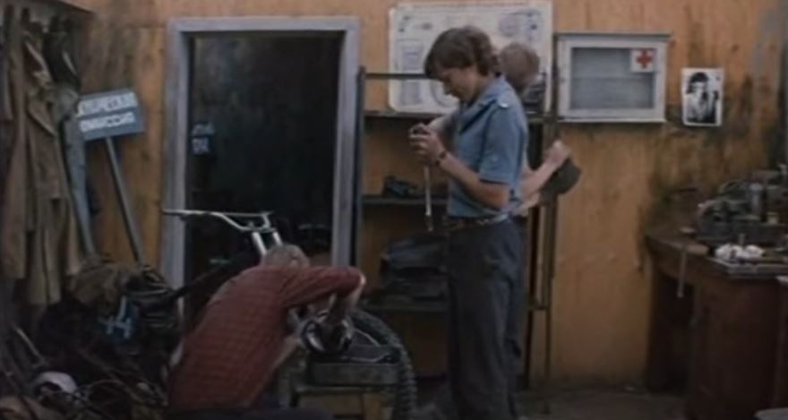
Генка угнал машину, чтобы покататься с друзьями, и его тут же забрали в милицию.
Владелец машины, известный мотогонщик, понял страсть мальчишки к технике...
У фильме обнаружено: Ява (500/854) - спидвей. (могу ошибаться )
Спортлото-82
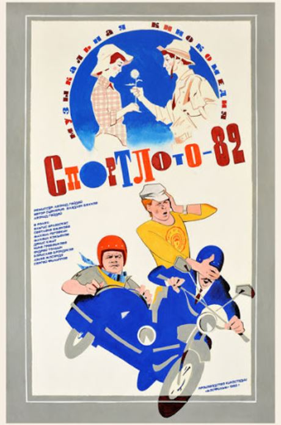
1982 p. Страна: СССР


 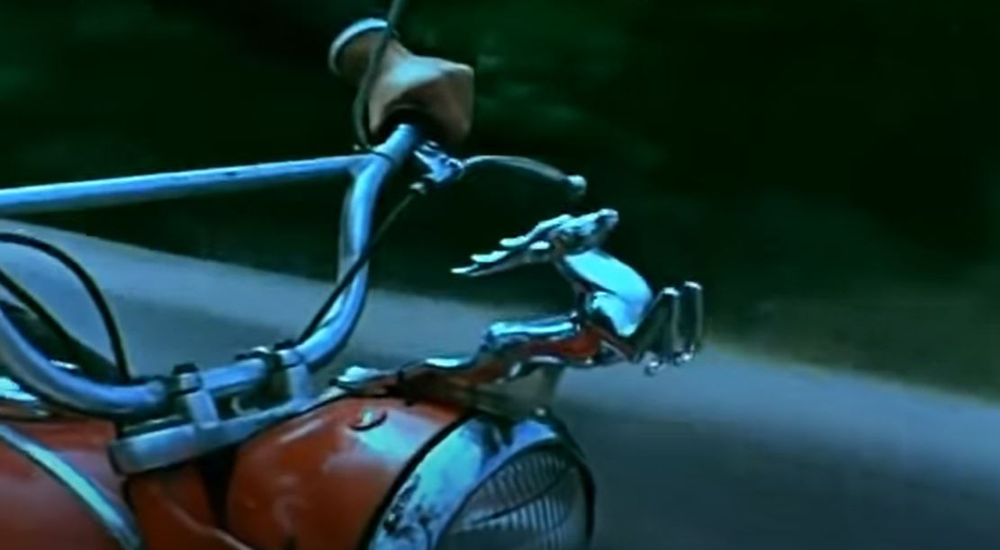
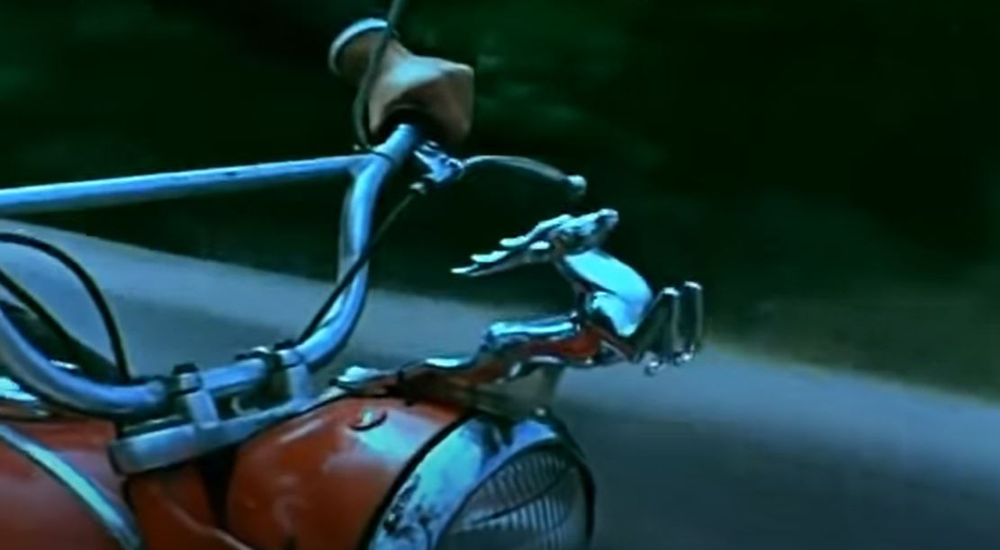
Летом 1982 года Костя Луков едет в поезде в Южногорск. В купе едут ещё трое: спекулянт Сан Саныч Мурашко,
турист Миша Голубев и Таня Пегова, которая едет встретиться с женихом.
Все четверо читают один и тот же детектив — «Смертельное убийство» Гениана Зелёного, и обладают одинаковыми экземплярами книг.
После знакомства Костя случайно съедает всю провизию Тани и, пытаясь загладить вину, покупает ей талон Спортлото.
Таня зачёркивает цифры в талоне и отдаёт его Косте на хранение. Он кладёт талон между страниц своей книги, но, выходя из поезда, берёт чужую книгу.